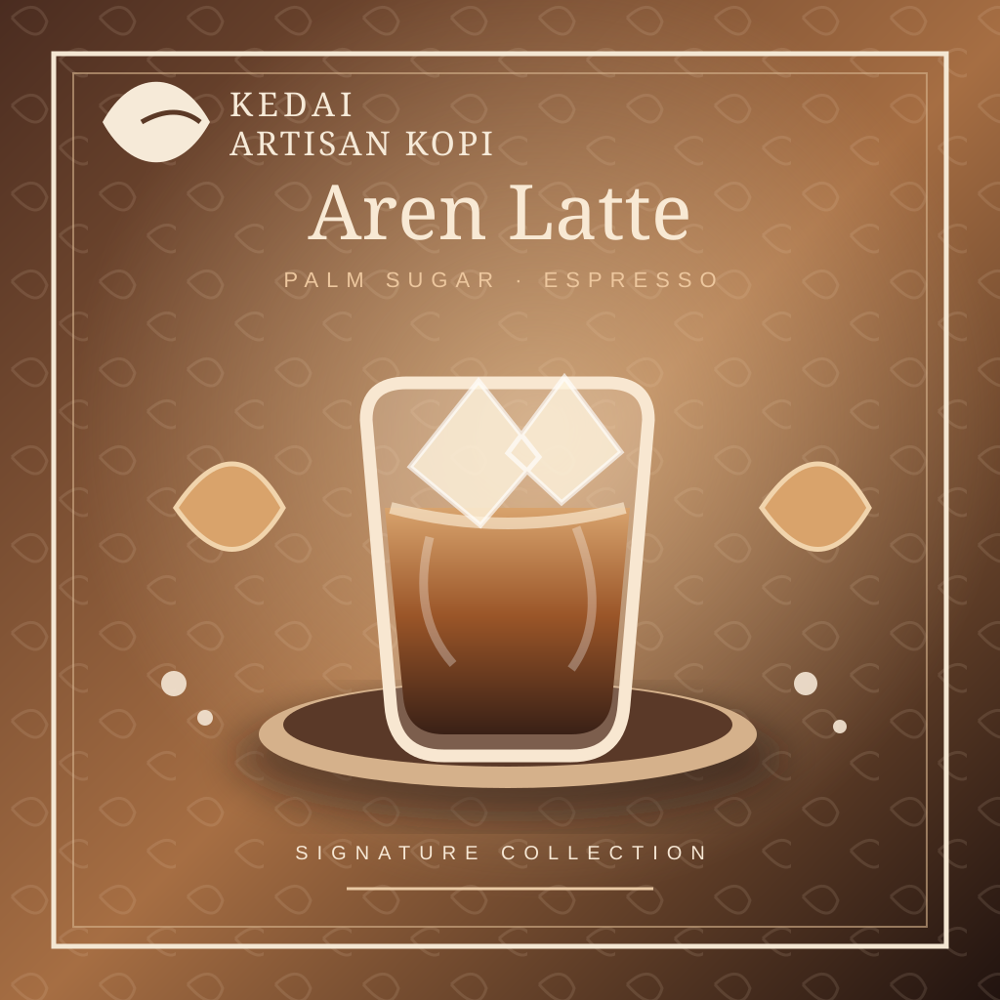

01 · SIGNATURE
Aren Latte
Espresso, susu creamy dan manis alami gula aren.
A MORE IMMERSIVE COFFEE EXPERIENCE
Pindai kartu menu dan lihat kreasi minuman Artisan Kopi hadir dalam pengalaman Augmented Reality.
Siapkan kartu menu, lalu aktifkan kamera.
HOW IT WORKS
Temukan salah satu kartu marker pada buku menu.
Arahkan kamera smartphone ke gambar menu.
Visualisasi 3D minuman muncul di atas marker.